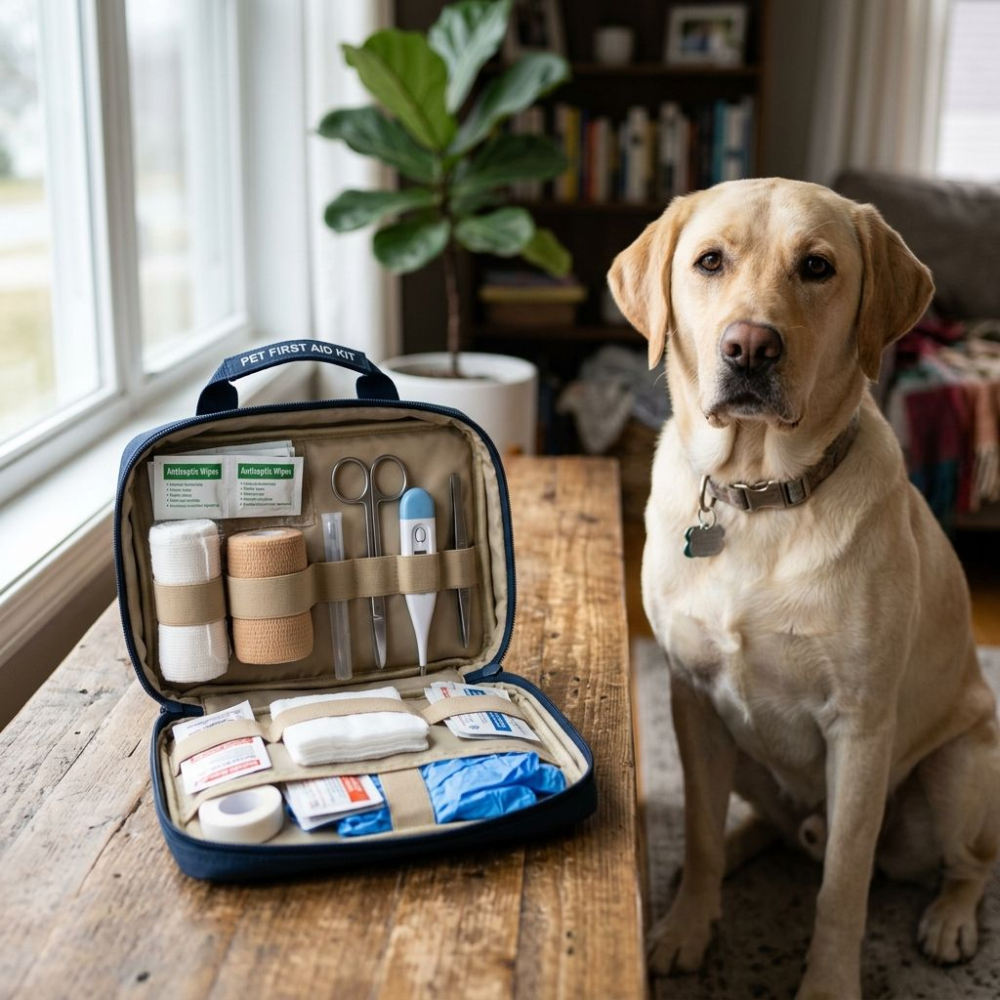
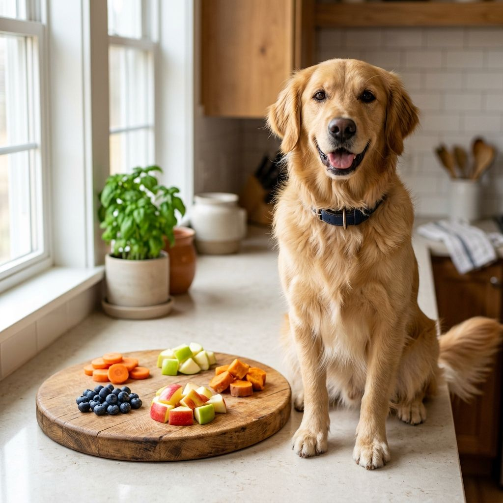
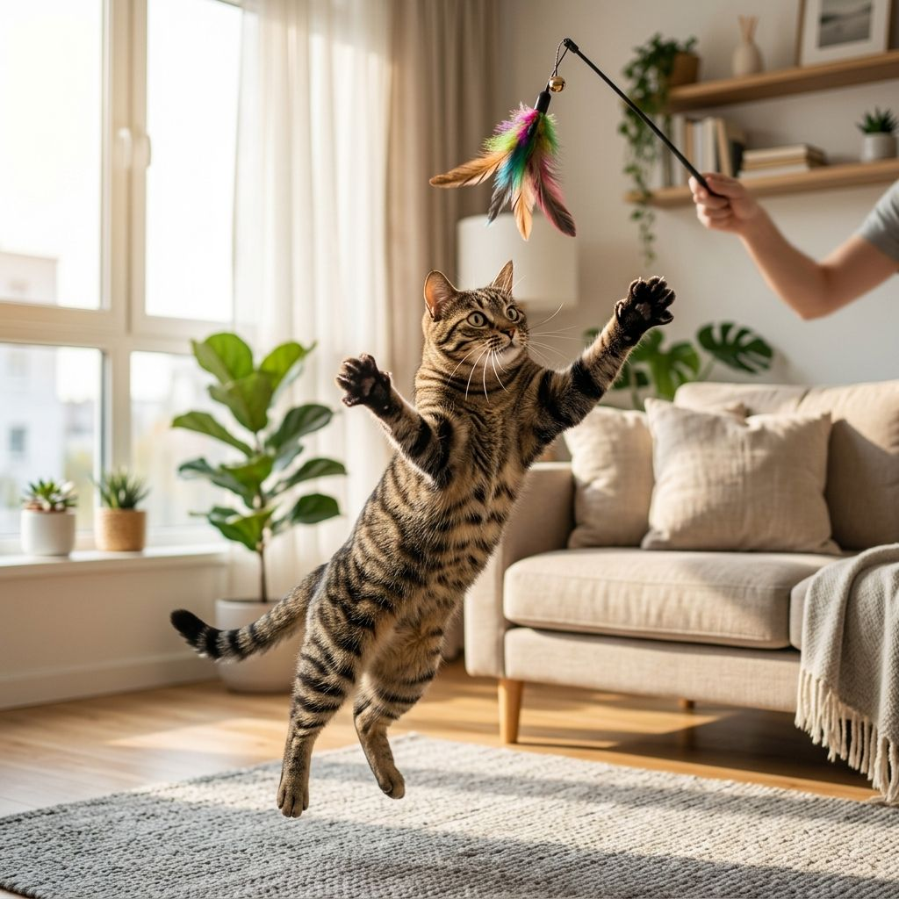
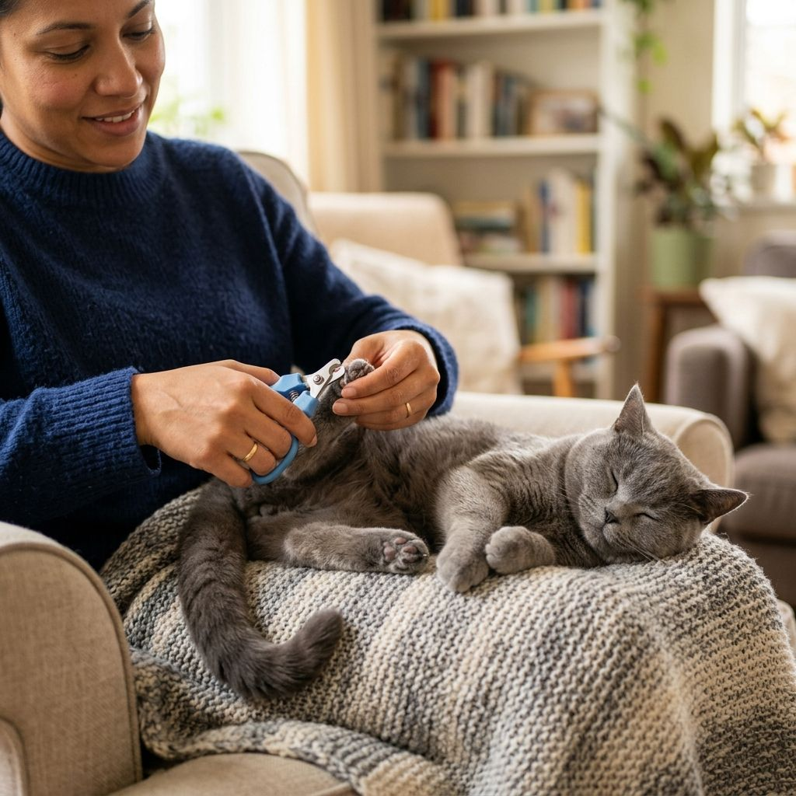
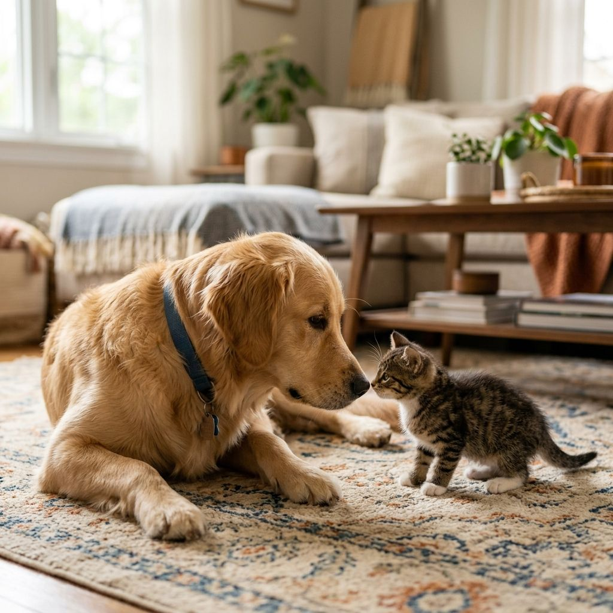
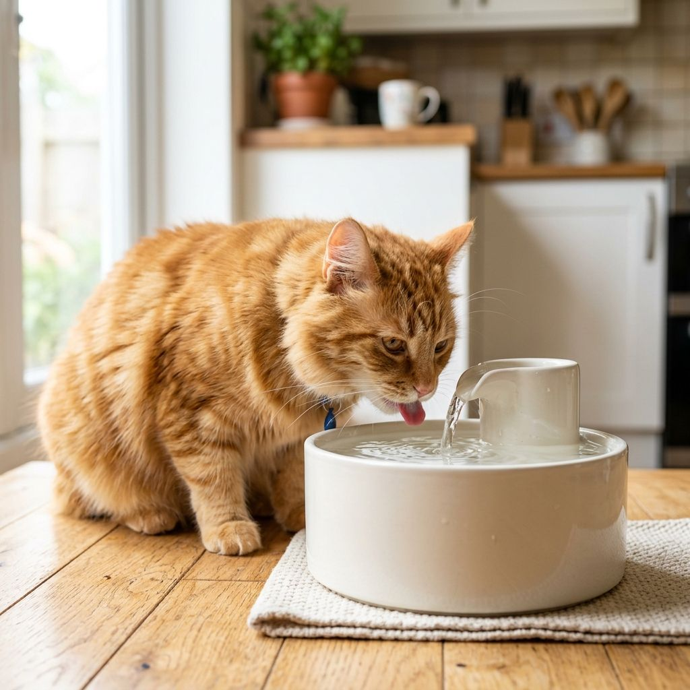
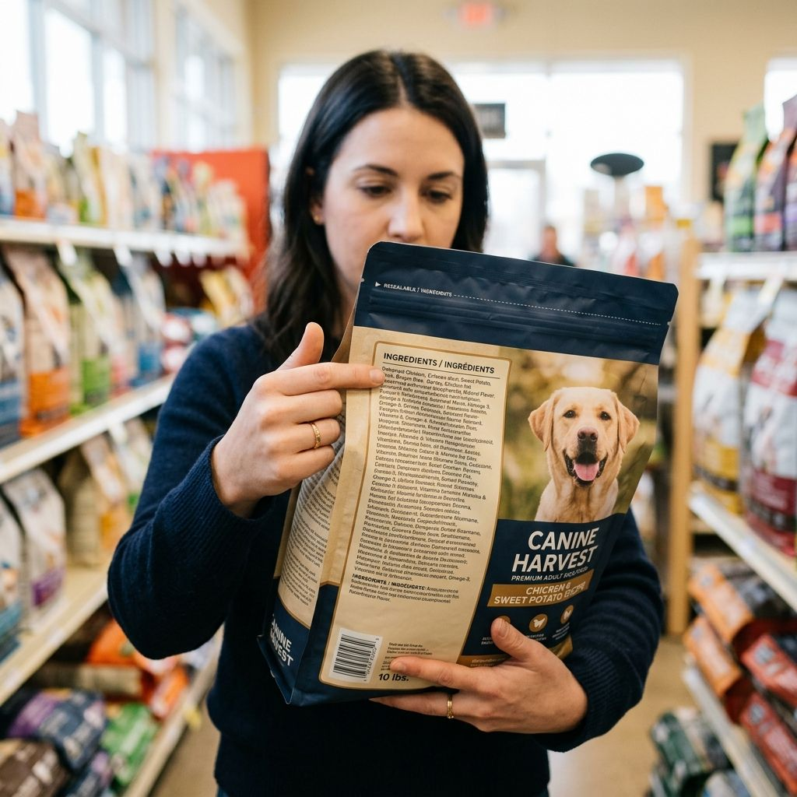
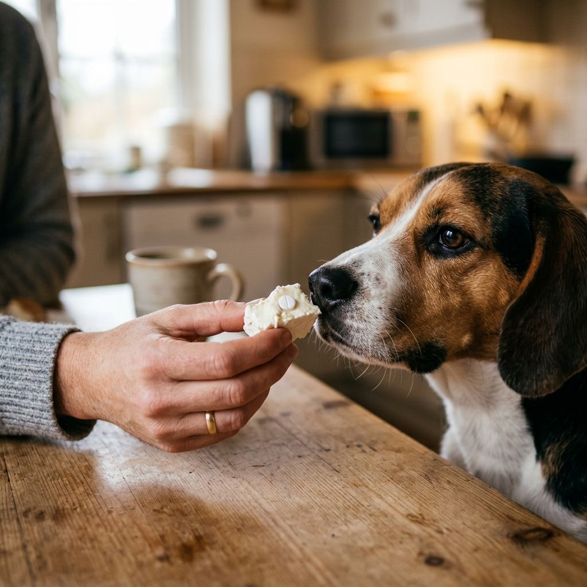
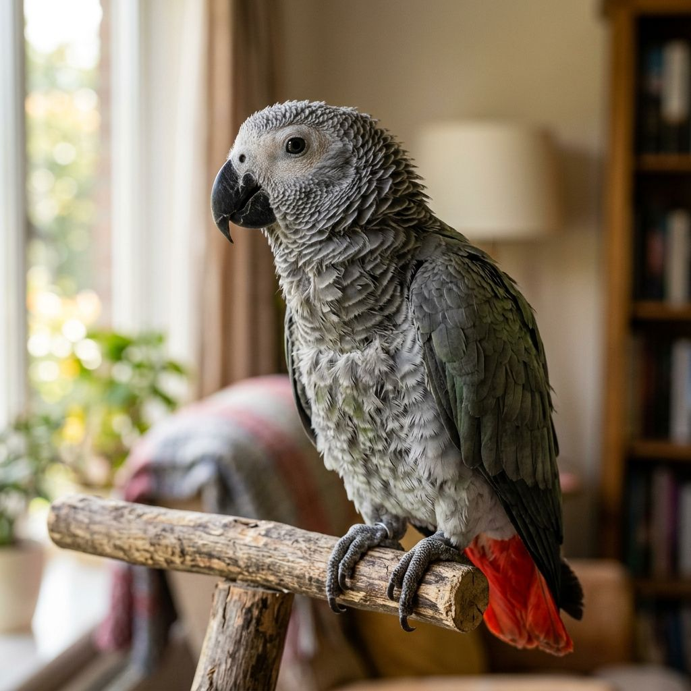

Vet-written articles on dog health, cat care, nutrition, and emergency preparedness. Written in plain language for real pet owners — not medical students.
Every pet owner faces this question at 11pm. Here's a clear, practical 3-tier framework: go now, see your vet within 24 hours, or monitor and call in the morning.
Read article →
Emergencies don't schedule themselves. Have the right supplies ready — and know exactly what to do before you reach the vet.
Read article →Short answer: yes, and they're genuinely good for dogs. But how many, when to skip them, and what to watch for — that's where most owners get it wrong.
Read article →
Your dog is staring at your plate. Before you give in, know what's genuinely safe to share — and what could land you in an emergency clinic.
Read article →80% of dogs over 8 have arthritis. Most are hiding the pain. Here are the subtle early signs and what you can actually do to help them feel better.
Read article →
A bored cat isn't just annoying — it's a cat quietly suffering. Here are 10 enrichment ideas that genuinely work, sourced from behavioral science.
Read article →Which vaccines your puppy needs, when to get them, what to watch for afterward — in plain language, not medical jargon. Plus a visual timeline.
Read article →Your dog isn't being dramatic. They're genuinely frightened by multiple simultaneous stimuli — and the anxiety worsens if untreated. Here's what actually works.
Read article →
The right technique makes an enormous difference. After years of doing this professionally, here's the approach that works — even with resistant cats.
Read article →
The most common mistake is moving too fast. Here's the structured 7-day plan that builds bonds — and prevents lasting conflict between pets.
Read article →
FLUTD is painful, common, and largely preventable. What's actually causing it, the warning signs to catch early, and what environmental changes genuinely reduce risk.
Read article →
"Natural," "premium," "grain-free" — these terms sell food but mean almost nothing nutritionally. Here's how to evaluate what you're actually feeding your pet.
Read article →
Your vet prescribed medication. Your cat disagrees. Here are the techniques that actually work — from pill pockets to the direct method — for both dogs and cats.
Read article →
A feather-plucking bird is sending a message. Decoding whether it's medical, behavioral, or both changes everything about how you respond — and how quickly your bird recovers.
Read article →80% of dogs have dental disease by age 3. Most owners don't know because pets hide dental pain. What's actually happening in your pet's mouth — and what to do.
Read article →